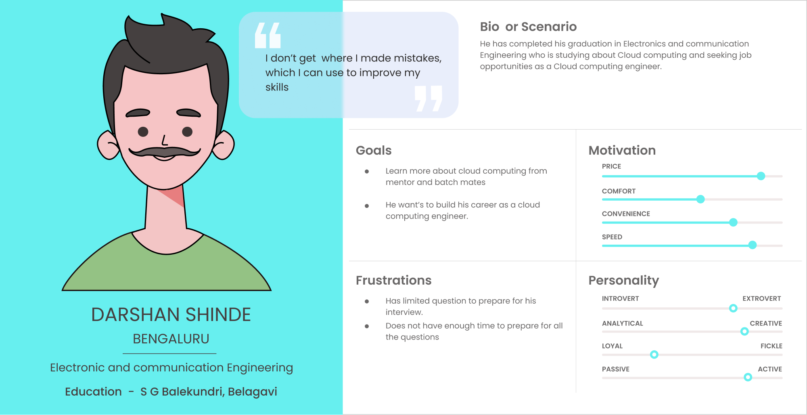
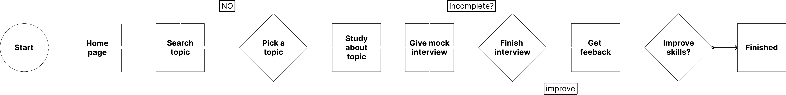
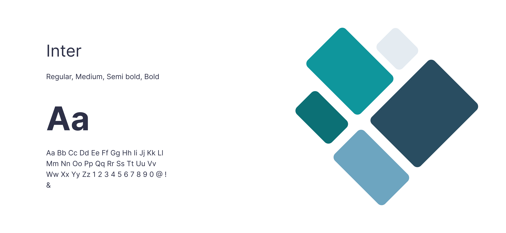

- Search bar to find desired course.
- Mock interview card with a clear CTA for user to start his/her interview preparation.
- Suggestions contain few action user can make like track Progress, Goals, Library, Recent courses.
- Pro tips are some important points for the user improve.
Career pulse app

Project Overview
In this platform, students can select a job profile relevant to them. Based on the job profile selected, they can see relevant interview questions, to which they can record their responses in a video format. On submission, they can get automated feedback on their pace of speech, accuracy, filler words, sensitive phrases & narration from the system.
Research
I conducted research by exploring related websites and apps to gather insights into existing interview preparation platforms. After analyzing their features and user experiences, I framed questions to understand users' preferences and pain points. Additionally, I interviewed friends to gather firsthand feedback on their interview preparation experiences, allowing me to tailor the application to address real user needs.
This research helped me build a persona which i used as a reference to design the app.
User flows
I mapped out the steps users would take from selecting a topic to receiving feedback on their recorded responses. I organized actions logically, ensuring intuitive navigation. This involved determining main screens, transitions, and simplifying steps where possible.
Information Architecture
Using the flow I created Information architecture which includes all possible screens and actions the user might need to prepare for his/her interview.

Wireframes
After understanding the user flows, information architecture, and goals, I created wireframes by sketching layouts of key screens and functionalities. I ensured consistency with user flows and prioritized content based on user needs. Iterative refinement was done to enhance usability and clarity, setting the foundation for the app's design.
Low fidelity wire-frames

Color and Typography
I chose "Inter" for its modern design and readability. Blue represents trust, while green symbolizes growth, creating a positive environment for interview prep.
Design
Home page includes
Library page includes
- It includes the courses the user has saved previously.
- It has a card which gives user idea to search for more courses.